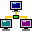

The NetworkAn old-school webring of websites and portfolios from instructional designers, trainers, educators, and other professionals I know.
Remember webrings? Here's how this one works: you share your page with me, I add it to The Network, and it gets listed here. Every site in the ring carries the same little Network buttons, so visitors can hop back and forth from one member site to the next, jump to a random one, or see the full list of sites. It's a small, friendly way to send people to each other's work.
Join The Network
- Send me your page. Email me (or use the Contact page) with the address of your site or portfolio.
- I add it to the ring. Your site shows up in the list below, with its title and icon.
- Paste the buttons onto your page. Type your address below, then copy the code and paste it anywhere in your page's HTML (a footer works great). That's it.
The graphics
The code above loads these straight from this site, so there's nothing to download. If you'd rather host them yourself, right-click and save them (they're tiny pixel-art PNGs).
Every site in The Network
The Network is just getting started. Yours could be the next site on it!